Project / every gene, by when it arrived
Timeline of genes
Every gene with a page, grouped by the batch that added it. Newest first. Each batch is one commit, under the day it landed, so a day's work can be reviewed gene by gene. Click a gene to open its page; hover for its family. A dash instead of a picture is a gene that changes no pixel of the coat.
node wiki/tools/bake-gene-timeline.mjs writes the list. Which genes are
on it comes from the registry (the generated block of pages.js, so a
parked gene is not); when each arrived comes from git - the first commit that added
a line containing its key. A gene whose key was later renamed shows at the rename,
not its birth. The thirteen eye loci have no pages of their own and are on
Eye colour instead.
297 genes with pages, in 42 batches over 11 days.
10 September 2026 77 genes
b3f9e9b Twenty-four genes out of intake, and the four ways the batch did not draw what it said
a6d76bd Intake batch as it arrived: 24 genes and three authoring notes
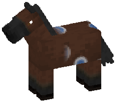
Agate Eye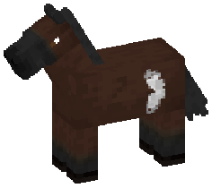
Barred Wing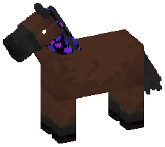
Beadscale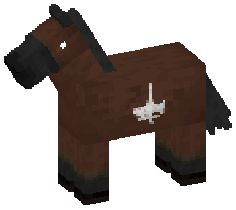
Candelabra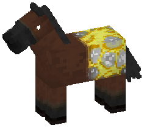
Gilded Crackle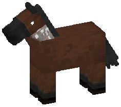
Holo Flake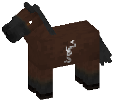
Inkcoil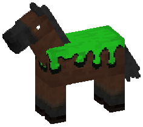
Ooze Drip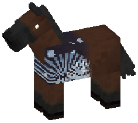
Opal Fire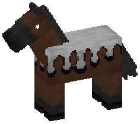
Rainbow Drip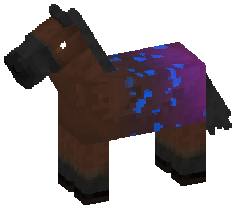
Sporefall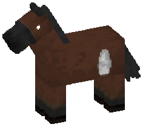
Taper Flame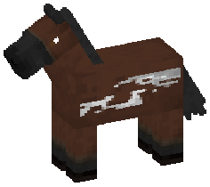
Tidewave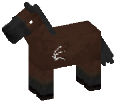
Tribal Claw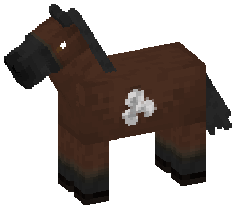
Trillium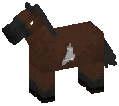
Uraniid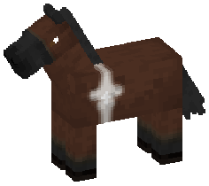
Wishstar
d965f62 Twenty-six behaviour genes, registered and paying for themselves
- –Base alarm
- –Bird boned
- –Cleansing light
- –Dryad
- –Echolocate
- –Egg layer
- –Ender echo
- –Eyesight locus
- –Fireproof
- –Food preference
- –Gladiator
- –Guardian
- –Holy ward
- –Hot blooded
- –Hydrophobic
- –Intimidating
- –Leader of the pack
- –Meowing
- –Music enjoyer
- –Ocean-born
- –Potion milk
- –Singer
- –Spawner
- –Spontaneous breeding
- –Weather sensitive (jump)
- –Weather sensitive (speed)
f6615f6 Molten hooves: the first dominant emission gene, and a correction to two pages
2030b21 Eleven genes out of intake, and the dead-layer check paying for itself
66aa4e1 A black allele for forty-two markings, the rule behind them, and Cleave split in two
6d661e8 Docs: the four retuned genes, nymphaline, and the gene notes off the gameplay tab
9da0b84 Nymphaline, a moonwing that wraps the topline, and coral bloom without its orange
9 September 2026 24 genes
716028f Twenty-two genes out of the intake folder, and the masks they asked for
65afacd Two night loci, nine genes repainted, a per-gene coat test, and a taxonomy sorting on the wrong axis
8 September 2026 121 genes
49f4952 Fourteen genes, a mask that asks the chart what colour it made, and eight loci that paint nothing
b3f40d4 Thirty-two genes, a gene file that can hold its own reasons, and invert's preview
 Banded Socks
Banded Socks Beetle Pearl
Beetle Pearl Coccinella Marking
Coccinella Marking Cracked Porcelain
Cracked Porcelain Diamond Scutes
Diamond Scutes Dorsal Shield
Dorsal Shield Dragon Shroud
Dragon Shroud Duskfall Speckle
Duskfall Speckle Duskwing Bands
Duskwing Bands Ehretia
Ehretia Elytra Veins
Elytra Veins Harlequin Shield
Harlequin Shield Ink Scroll
Ink Scroll Iridescent Jewel Beetle Coat
Iridescent Jewel Beetle Coat Koi
Koi Lace
Lace Ladybug Saddle
Ladybug Saddle Moth Mantle
Moth Mantle Moth Wings
Moth Wings Nebula Points
Nebula Points Opal Wing-Vein Marking
Opal Wing-Vein Marking Opaline Zebra
Opaline Zebra Painted Lady Wingmark
Painted Lady Wingmark Picasso Marking
Picasso Marking Scarab Dapple
Scarab Dapple Shieldback
Shieldback Snow Cloud
Snow Cloud Tidemark
Tidemark Tribal Ward
Tribal Ward Webbed
Webbed Wyrmwood Sigils
Wyrmwood Sigils
a345c03 Finish the white-lock pass, re-bake it, and bury two genes properly
eaf9230 Fifty-two more magical genes, the wiki pages for all of them, and an INVERT op
 Accretion
Accretion Auroraband
Auroraband Black Holes
Black Holes Burn
Burn Cleave
Cleave Corvid
Corvid Cosmic
Cosmic Dust
Dust Dutch
Dutch Element Dusted
Element Dusted Emitola
Emitola Fade
Fade Fawn
Fawn Fielded
Fielded Flametouched
Flametouched Fracture
Fracture Frostfall
Frostfall Galaxy
Galaxy Gamma
Gamma Goth
Goth Gudial
Gudial Guppy
Guppy Hood
Hood Hued Pangare
Hued Pangare Imperial
Imperial Integration
Integration Invert
Invert Iuari
Iuari Kintsugi
Kintsugi Laciano
Laciano Marble Tobiano
Marble Tobiano Masked
Masked Nebula Light
Nebula Light Nimbus
Nimbus Opalized
Opalized Opossum
Opossum Oscar
Oscar Panark
Panark Panda
Panda Papillon
Papillon Patina
Patina Pavonem
Pavonem Peafowl
Peafowl Prismtail
Prismtail Qhada
Qhada Quarter
Quarter Quazars
Quazars Qular
Qular Rex
Rex Shark
Shark Sky Shadow
Sky Shadow Speckling
Speckling Spectrum Light
Spectrum Light Stardust
Stardust Striped Mane and Tail
Striped Mane and Tail Synort
Synort Valentine Appaloosa
Valentine Appaloosa Voided
Voided War Mask
War Mask Winged
Winged Xuke
Xuke Yalia
Yalia
cb2ea37 Ten linear genes, a level-set STROKES, and four tests that were asserting luck
7 September 2026 28 genes
2107d86 Ten magical genes, and the two tools that showed the first five were wrong
383c9c5 A werewolf locus that swaps the entity, rainbow dust, and a particle locus that went recessive
94e8e75 Epigenetics become literal stored numbers, foals drift, breeds let go — and the rest of the disorder genes
df4b2d7 Manchado: white with islands in it, and its own locus
06391d2 Rabicano: dominant to inherit, a roll to see
1cfffbb Pangare, sooty's mirror - and the medial helper gap #51 asked for
6d12ca2 Sooty: a dark cape, made by declining to remove pigment
e74e494 Flaxen: a chestnut's pale mane, as a dosage rather than as folklore
52ec423 The dhampir: a recessive whose carrier is the advertisement
ad88c05 A diet locus: twelve narrow appetites, and a channel other genes override
6 September 2026 5 genes
bfc89b0 Zebra and brindle stop sharing a stripe field, and natural zebra exists
970bd9b Green and hazel eyes, both heterochromias, and a magic locus for the second
75000ca Sex-linked genes, an eye-colour channel, and the white that climbed the belly
3a49c2e Add the leopard complex (appaloosa): LP + PATN1 + PATN2
5 September 2026 5 genes
16ca0d9 Add the cutie-mark gene
cc91515 Add the LUT gene, and rebuild the Horse Browser as a container menu
2b845c8 Magic speed, magic health and magic jump: three more body-stat genes
4 September 2026 25 genes
8682b4e The particle locus: forty alleles on one gene
26597f6 Seven magical utility genes, designed as a set so they combine
5c03f2b Horses get a body from their genes, and the random stat roll is gone
0f3fcdb White markings become four real loci: KIT, MITF, PAX3 and EDNRB
3 September 2026 2 genes
528031f Sex becomes a gene: an X/Y locus at priority 1, and HorseRecord.sex derived
080054a Combination tables replace dominance; multi-allele loci; epigenome on the record
2 September 2026 5 genes
a26e178 Seven visual natural genes: dun, silver, mushroom, roan, tobiano, frame, sabino
1 September 2026 2 genes
2230418 Three-phase pigment pipeline, and the first two magical genes
56bdfff fixed issue where bay and chestnut coats were not rendering